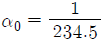
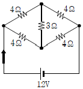
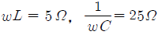
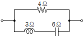
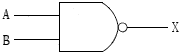
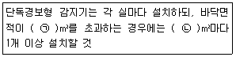
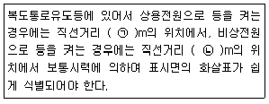

소방설비산업기사(전기) (2012-03-04 기출문제)
1과목: 소방원론
1. 제1종 분말소화약제의 주성분에 해당하는 것은?
- NaHCO3
- KHCO3
- NH4HCO3
- NH4H2PO4
(정답률: 75%)

2. 다음 중 연소의 3요소가 아닌 것은?
- 점화원
- 공기
- 연료
- 촉매
(정답률: 89%)
3. 적린의 착화온도는 약 몇 ℃인가?
- 34
- 157
- 200
- 260
(정답률: 73%)
4. CO2의 증기비중은 약 얼마인가?
- 1.5
- 1.9
- 28.8
- 44.1
(정답률: 57%)
5. 화재가 발생하여 온도가 21℃에서 650℃가 되었다면 공기의 부피는 처음의 약 몇 배가 되는가? (단, 압력은 동일하다.)
- 3.14
- 6.25
- 9.17
- 12.⑤
(정답률: 67%)
6. Halon 1211의 화학식으로 옳은 것은?
- CF2BrCl
- CFBrCl2
- C2F4Br2
- CH2BrCl
(정답률: 85%)
7. 유류탱크 화재시 비점이 낮은 다른 액체가 밑에 있는 경우 연소에 따른 고온층이 강하 하여 아래의 비점이 낮은 액체에 도달한 때 급격히 기화하고 다량의 유류가 외부로 넘치는 것을 무엇이라고 하는가?
- 보일오버
- 백드래프트
- 굴뚝효과
- 드롭오버
(정답률: 81%)
8. 분말소화설비에 사용하는 소화약제 중 차고 또는 주차장에 설치하는 분말소화설비의 소화약제로 적합한 것은?
- 제1종
- 제2종
- 제3종
- 제4종
(정답률: 76%)
9. 가연성 액체의 일반적인 특성이 아닌 것은?
- 인화의 위험이 있다.
- 점화원의 접근은 위험하다.
- 정전기가 점화원이 될 수 있다.
- 착화온도가 높을수록 위험도가 높다.
(정답률: 83%)
10. 화재발생시 물을 사용하여 소화하면 더 위험해지는 것은?
- 피크린산
- 질산암모늄
- 나트륨
- 황린
(정답률: 83%)
11. 화재의 분류상 일반화재에 해당하는 것은?
- A급
- B급
- C급
- D급
(정답률: 91%)
12. 다음 중 할로겐족 원소가 아닌 것은?
- F
- Cl
- Br
- Fe
(정답률: 79%)
13. 건축물의 주요구조부가 아닌 것은?
- 차양
- 주계단
- 내력벽
- 기둥
(정답률: 86%)
14. 플래시오버(flash over) 현상을 가장 적절히 설명한 것은?
- 역화현상
- 탱크 밖으로 기름이 분출되는 현상
- 온도상승으로 연소의 급속한 확대현상
- 외부에서의 연소현상
(정답률: 84%)
15. LPG의 일반적인 특징으로 옳은 것은?
- C6H6가 주성분이다.
- 공기보다 무겁다.
- 도시가스보다 가볍다.
- 물에 잘 녹으나 알코올에는 용해되지 않는다.
(정답률: 68%)
16. 화재시 건축물의 피난안전 계획으로 부적합한 것은?
- 건축물의 용도를 고려한 피난계획수립
- 막다른 복도의 설치
- 안전구획의 설치
- 단순명료한 피난 경로 구성
(정답률: 90%)
17. 다음 중 연소와 가장 관련이 있는 반응은?
- 산화반응
- 환원반응
- 치환반응
- 중화반응
(정답률: 88%)
18. 열전달 방법 3가지에 해당하지 않는 것은?
- 복사
- 확산
- 전도
- 대류
(정답률: 83%)
19. 가연성 가스의 공기 중 폭발범위를 옳게 표현한 것은?
- 가연성 가스와 공기와의 혼합가스에 점화원을 주었을 때 폭발이 일어날 수 있는 가연성 가스의 용량 %의 범위
- 동일 압력에서 기체상태로 존재하기 위한 온도 범위
- 폭발에 의하여 피해가 발생할 수 있는 가연성 가스의 공기 중 질량 %의 범위
- 폭굉이 발생할 수 있는 공기 중 가연성가스의 질량 %의 범위
(정답률: 77%)
20. 물 1g이 100℃에서 수증기로 되었을 때의 부피는 1기압을 기준으로 약 몇 l인가?
- 0.3
- 1.7
- 10.8
- 22.4
(정답률: 44%)
2과목: 소방전기회로
21. 소화설비의 기동장치에 응용되는 유한장 솔레노이드에 의한 내부 자계의 세기는?
- 코일의 권수에 비례한다.
- 코일의 권수에 반비례한다.
- 전류의 세기에 반비례한다.
- 전류 세기의 1/√3에 반비례한다.
(정답률: 70%)
22. 논리식 Aㆍ(A+B)를 간단히 하면?
- A
- B
- AㆍB
- A+B
(정답률: 80%)
23. 0℃에서 저항 234.5Ω인 연동선이 있다. 온도가 1℃ 상승하면 증가하는 저항[Ω]은? (단, 연동선의 온도계수

이다.)- 1
- 2
- 234.5
- 54990.25
(정답률: 60%)
24. 변위를 전압으로 변환시키는 장치가 아닌 것은?
- 포텐셔미터
- 차동변압기
- 전위차계
- 측온저항
(정답률: 78%)
25. 저항 100Ω의 전선에 5A의 전류가 1초 동안 흐르는 경우 발생하는 열량은?
- 600cal
- 3600kcal
- 10,460cal
- 18,000kcal
(정답률: 50%)
26. 전원전압을 일정하게 유지하기 위하여 사용되는 다이오드는?
- 터널 다이오드
- 제너 다이오드
- 버랙터 다이오드
- 발광 다이오드
(정답률: 87%)
27. 정격전압에서 800W의 전력을 소비하는 저항에 정격의 80%의 전압을 가했을 때 소요되는 전력[W]은?
- 384
- 486
- 512
- 545
(정답률: 60%)
28. 1μs동안에 1010개의 전자가 이동할 때 흐르는 전류는 약 몇 A인가?
- 1.6×10-6
- 1.6×10-3
- 1.6
- 16
(정답률: 62%)
29. 미지의 저항 R1, R2와 R3=6 Ω의 저항 3개를 직렬로 연결하고 40V의 전압을 가하였더니 저항 R2에 20V, 저항 R3에 12V의 전압이 걸렸다면 R1및 R2의 크기는?
- R1=4Ω, R2=10Ω
- R1=10Ω, R2=4Ω
- R1=10Ω, R2=20Ω
- R1=20Ω, R2=10Ω
(정답률: 65%)
30. 직류 전동기의 회전수를 일정하게 유지시키기 위하여 전압을 변화시켰다면 회전수는 무엇에 해당되는가?
- 조작량
- 제어량
- 목푯값
- 기준량
(정답률: 57%)
31. “전자유도에 의하여 생기는 기전력은 자속 변화를 방해하는 전류를 발생시키는 방향으로 생긴다.”라는 법칙은?
- 앙페르의 주회법칙
- 비오-사바르의 법칙
- 렌츠의 법칙
- 패러데이의 법칙
(정답률: 51%)
32. 평형 3상 회로에 △결선된 부하를 Y결선으로 바꾸면 소비전력은? (단, 선간전압은 일정하고, P△는 △결선시 소비전력이고, PY는 Y결선시 소비전력이다.)
- PY3PΔ
- PY9PΔ
- PY1/3PΔ
- PY1/9PΔ
(정답률: 67%)
33. 그림과 같은 브리지회로에서 흐르는 전류 [A]는?

- 3
- 4
- 4.5
- 5
(정답률: 68%)
34.

의 L-C 직렬 회로에 전압 220V의 교류를 가할 때 흐르는 전류[A]는?- 1.5
- 7.3
- 11
- 12.5
(정답률: 55%)
35. 물체의 위치, 방위, 자세 등의 기계적 변위를 제어량으로 해서 목푯값의 임의의 변화에 추종하도록 구성된 제어계는?
- 서보제어
- 자동조정제어
- 프로세스제어
- 멀티플렉스제어
(정답률: 77%)
36. 그림과 같은 회로의 역률은?

- 0.5
- 0.6
- 0.8
- 0.95
(정답률: 50%)
37. 그림과 같은 논리회로의 명칭은?

- OR
- NOT
- NAND
- NOR
(정답률: 85%)
38. 10kVA의 변압기 2대로 최대로 공급할 수 있는 3상 전력은?
- 약 14.1
- 약 17.3
- 약 20
- 약 30
(정답률: 81%)
39. 실리콘제어정류기(SCR)에 대한 설명 중 틀린 것은?
- P-N-P-N의 4층 구조이다.
- 스위칭 소자이다.
- 직류 및 교류의 전력 제어용으로 사용된다.
- 양방향성 사이리스터이다.
(정답률: 80%)
40. 매분 500rpm, 주파수 60㎐의 기전력을 유기하고 있는 교류발전기가 있다. 전기각속도 ω[rad/sec]는?
- 314
- 337
- 357
- 377
(정답률: 73%)
3과목: 소방관계법규
41. 위험물의 지정수량에서 산화성 고체인 중크롬산염류의 지정수량은?
- 3000㎏
- 1000㎏
- 300㎏
- 50㎏
(정답률: 69%)
42. 화재경계지구에 관한 사항으로 소방본부장 또는 소방서장이 수행하여야 할 직무가 아닌 것은?
- 화재가 발생할 우려가 높아 그로 인한 피해가 클 것으로 예상되는 일정 지역을 화재경계지구로 지정할 수 있다.
- 화재경계지구 안의 소방대상물의 위치 ㆍ구조 및 설비 등에 대하여 소방특별조사를 하여야 한다.
- 화재경계지구 안의 관계인에 대하여 소방에 필요한 훈련 및 교육을 실시할 수 있다.
- 화재경계지구 안의 관계인에 대한 소방용수 시설ㆍ소화기구 등의 설치를 명할 수 있다.
(정답률: 61%)
43. 전문소방시설공사업의 등록을 하고자 할 때 법인의 자본금의 기준은?
- 5천만 원 이상
- 1억 원 이상
- 2억 원 이상
- 3억 원 이상
(정답률: 81%)
44. 다음 소방시설 중 피난설비에 속하지 않는 것은?
- 방열복
- 유도표지
- 미끄럼대
- 무선통신보조설비
(정답률: 73%)
45. 위험물을 취급하는 건축물에 설치하는 채광ㆍ조명 및 환기설비의 기준 등에 관한 설명으로 잘못된 것은?
- 채광설비는 연소의 우려가 없는 장소에 설치해도 채광면적은 최대로 할 것
- 환기설비의 환기구는 지붕 위 또는 지상 2m 이상의 높이에 회전식 고정벤티레이터 또는 루프팬 방식으로 설치할 것
- 환기설비의 환기는 자연배기 방식으로 할 것
- 환기설비의 급기구는 낮은 곳에 설치할 것
(정답률: 49%)
46. 소방시설공사업법에서 정하고 있는 “소방시 설업”에 속하지 않는 것은?
- 소방시설 관리업
- 소방시설 공사업
- 소방공사 감리업
- 소방시설 설계업
(정답률: 70%)
47. 소방용수시설의 설치기준에서 급수탑을 설치하고자 할 때 개폐밸브의 설치 높이는?
- 지상에서 1.0m 이상 1.5m 이하
- 지상에서 1.5m 이상 1.7m 이하
- 지상에서 1.5m 이상 2.0m 이하
- 지상에서 1.2m 이상 1.8m 이하
(정답률: 72%)
48. 소방체험관을 설립하여 운영할 수 있는 사람은?
- 소방본부장
- 소방청장
- 시ㆍ도지사
- 행정안전부장관
(정답률: 77%)
49. 소방시설 등의 자체점검 중 종합정밀점검을 실시한 자는 며칠 이내에 그 결과보고서 등을 관할소방서장 또는 소방본부장에게 제출하여야 하는가? (관련 규정 개정전 문제로 여기서는 기존 정답인 3번을 누르면 정답 처리됩니다. 자세한 내용은 해설을 참고하세요.)
- 7일 이내
- 15일 이내
- 30일 이내
- 60일 이내
(정답률: 68%)
50. 불을 사용하는 설비의 관리기준 등에서 경유ㆍ등유 등 액체연료를 사용하는 보일러의 연료탱크에는 화재 등 긴급 상황이 발생할 경우 연료를 차단할 수 있는 개폐밸브를 연료탱크로부터 몇 m 이내에 설치하여야 하는 가?
- 0.1
- 0.5
- 1.0
- 1.5
(정답률: 56%)
51. 공동소방안전관리자를 선임하여야 하는 대상물 중 고층건축물은 지하층을 제외한 층수가 얼마 이상인 건축물에 한하는가?
- 6층
- 11층
- 20층
- 30층
(정답률: 83%)
52. 상주공사감리의 방법에서 감리업자가 지정하는 감리원은 행정안전부령으로 정하는 기간동안 공사현장에 상주하여 업무를 수행하고 감리일지에 기록해야 한다. 여기서“행정안전부령으로 정하는 기간”이란?
- 착공신고 때부터 주 1회 이상 완공검사를 신청하는 때까지
- 착공신고 때부터 주 1회 이상 완공검사증명서를 발급받을 때까지
- 소방시설용 배관을 설치하거나 매립하는 때부터 완공검사를 신청하는 때까지
- 소방시설용 배관을 설치하거나 매립하는 때부터 소방시설 완공검사증명서를 발급받을 때까지
(정답률: 59%)
53. 학교의 지하층인 경우 바닥면적의 합계가 얼마 이상인 경우 연결살수설비를 설치하여야 하는가?
- 500m2
- 600m2
- 700m2
- 1000m2
(정답률: 37%)
54. 연면적 또는 바닥면적 등에 관계없이 건축허가동의를 받아야 하는 소방대상물은?
- 청소년시설
- 공연장
- 항공기격납고
- 차고ㆍ주차장
(정답률: 79%)
55. 위험물 제조소 등의 완공검사필증을 잃어버려 재교부를 받은 자가 잃어버린 완공검사필증을 발견하는 경우에는 이를 며칠 이내에 완공검사필증을 재발급한 시ㆍ도지사에게 제출하여야 하는가?
- 7일
- 10일
- 14일
- 30일
(정답률: 42%)
56. 위험물 제조소 및 일반취급소로서 연면적이 500m2 이상인 것에 설치하여야 하는 경보설비는?
- 비상경보설비
- 자동화재탐지설비
- 확성장치
- 비상방송설비
(정답률: 65%)
57. 2급 소방안전관리대상물의 소방안전관리자로 선임될 수 없는 사람은?
- 위험물기능사 자격을 가진 사람
- 소방공무원으로 3년 이상 근무한 경력이 있는 사람
- 의용소방대원으로 2년 이상 근무한 경력이 있는 사람
- 소방본부 또는 소방서에서 1년 이상 화재진압 또는 보조업무에 종사한 경력이 있는 사람
(정답률: 50%)
58. 소방신호의 종류에 해당하지 않는 것은?
- 해제신호
- 발화신호
- 훈련신호
- 출동신호
(정답률: 66%)
59. 자동화재속보설비를 설치하여야 하는 특정소방대상물에 대한 설명으로 옳지 않은 것은?
- 창고시설로서 바닥면적이 1500m2 이상인 층이 있는 것
- 공장으로서 바닥면적이 500m2 이상인 층이 있는 것
- 노유자시설로서 바닥면적이 500m2 이상인 층이 있는 것
- 문화재보호법에 따라 국보 또는 보물로 지정된 목조건축물
(정답률: 49%)
60. 소방대상물이 있는 장소 및 그 이웃지역으로서 화재의 예방ㆍ경계ㆍ진압, 구조ㆍ구급 등의 활동에 필요한 지역으로 정의되는 것은?
- 방화지역
- 밀집지역
- 소방지역
- 관계지역
(정답률: 68%)
4과목: 소방전기시설의 구조 및 원리
61. 주방ㆍ보일러실 등으로서 다량의 화기를 취급하는 장소에 설치하는 정온식 감지기는 공칭작동온도가 최고 주위온도보다 몇 ℃ 이상 높은 것으로 설치하여야 하는가?
- 3
- 5
- 20
- 100
(정답률: 82%)
62. 감도조정장치를 갖는 누전경보기에 있어서 감도조정장치의 조정범위는 최대치가 몇 A이어야 하는가?
- 1
- 5
- 10
- 20
(정답률: 68%)
63. 비상콘센트설비의 전원회로가 단상 교류인 경우 사용되는 전압[V]은?
- 440
- 380
- 220
- 110
(정답률: 81%)
64. 지하층을 제외한 층수가 11층 이상의 층에 설치하는 비상조명등의 비상전원은 그 부분에서 피난층에 이르는 부분의 비상조명등을 몇 분 이상 유효하게 작동시킬 수 있는 용량으로 하여야 하는가?
- 20분
- 30분
- 60분
- 120분
(정답률: 67%)
65. 자동화재탐지설비의 화재안전기준에 따른 부착높이가 20m 이상인 장소에 설치할 수 있는 감지기는? (단, 감지기별 부착높이 등에 대하여 별도 형식승인을 받는 경우는 제외한다.)
- 차동식 분포형 감지기
- 이온화식 1종 감지기
- 정온식 감지선형 1종 감지기
- 광전식 분리형 아날로그 방식 감지기
(정답률: 59%)
66. 단독경보형 감지기의 설치기준과 관련하여 ( ) 안에 들어갈 수치로 알맞은 것은?

- ㉠ 75, ㉡ 25
- ㉠ 75, ㉡ 75
- ㉠ 150, ㉡ 50
- ㉠ 150, ㉡ 150
(정답률: 61%)
67. 비상전원의 상태를 감시할 수 있는 장치가 없어도 되는 유도등은?
- 객석유도등
- 계단통로유도등
- 거실통로유도등
- 복도통로유도등
(정답률: 80%)
68. 유도등의 전기회로에 점멸기를 설치하는 경우 유도등이 점등되지 않아도 되는 경우는?
- 누전경보기가 작동되는 때
- 비상경보설비의 발신기가 작동되는 때
- 상용전원이 정전되거나 전원선이 단선되는 때
- 자동소화설비가 작동되는 때
(정답률: 50%)
69. 피난기구의 위치를 표시하는 축광표지는 주위 조도 0lx에서 60분간 발광 후 직선거리 몇 m 떨어진 위치에서 위치표지를 식별할 수 있어야 하는가?
- 1
- 3
- 10
- 20
(정답률: 62%)
70. 다음 ( ) 안에 들어갈 수치로 옳은 것은?

- ㉠ 30 ㉡ 15
- ㉠ 30 ㉡ 10
- ㉠ 20 ㉡ 15
- ㉠ 20 ㉡ 10
(정답률: 50%)
71. 비상방송설비의 음향장치를 실외에 설치하는 경우 확성기의 음성입력은 최소 얼마 이상으로 하여야 하는가?
- 1W
- 3W
- 10W
- 30W
(정답률: 82%)
72. 광전식 분리형 감지기의 광축의 높이는 천장 등 높이의 몇 % 이상이어야 하는가?
- 3
- 5
- 70
- 80
(정답률: 79%)
73. 해당 전로에 정전기 차폐장치가 설치되지 아니한 무선통신보조설비의 누설동축케이블 및 안테나는 고압의 전로로부터 몇 m 이상 떨어진 위치에 설치하여야 하는가?
- 1.5
- 3.0
- 4.5
- 6.0
(정답률: 66%)
74. 공기관식 차동식 분포형 감지기는 공기관과 감지구역의 각 변과의 수평거리는 몇 m 이하가 되도록 하여야 하는가?
- 0.5
- 1.5
- 6
- 9
(정답률: 53%)
75. 무선통신보조설비의 무선기기 접속단자의 설치기준으로 옳지 않은 것은?
- 접속단자는 지상에서 유효하게 소방활동을 할 수 있는 장소 또는 수위실 등 상시 사람이 근무하고 있는 장소에 설치할 것
- 접속단자의 설치높이는 바닥으로부터 0.8m 이상 1.5m 이하의 위치에 설치할 것
- 지상에 설치하는 접속단자는 보행거리 300m 이내마다 설치할 것
- 접속단자의 보호함 표면에는“소방용 접속단자”라고 표시한 표지를 할 것
(정답률: 66%)
76. 비상콘센트설비 전원회로의 설치기준에 관한설명으로 틀린 것은?
- 콘센트마다 배선용 차단기를 설치하여야 하며, 충전부는 노출되도록 하여야 한다.
- 각 층에 있어서 2 이상이 되도록 설치하되 설치하여야 할 층의 비상콘센트가 1개인 때에는 하나의 회로로 할 수 있다.
- 전원으로부터 각 층의 비상콘센트에 분기되는 경우에는 분기배선용 차단기를 보호함 안에 설치하여야 한다.
- 개폐기에는“비상콘센트”라고 표시한 표지를 하여야 한다.
(정답률: 79%)
77. 감지기 또는 발신기 작동에 의한 신호 또는 가스누설경보기의 탐지부에서 발하여진 가스누설신호를 받아 이를 수신기, 가스누설경보기, 자동소화설비의 제어반에 발신하여 소화 설비ㆍ제연설비 그 밖에 이와 유사한 방재설비에 제어신호를 발신하는 것은?
- 이보기
- 중계기
- 속보기
- 비화재보방지기
(정답률: 68%)
78. 유도표지의 설치기준으로 옳지 않은 것은?
- 계단에 설치하는 것을 제외하고는 각 층마다 복도 및 통로의 각 부분으로부터 하나의 유도표지까지의 보행거리가 15m이하가 되는 곳에 설치한다.
- 피난구유도표지는 출입구 상단에 설치한다.
- 통로유도표지는 바닥으로부터 높이 80㎝ 이하의 위치에 설치한다.
- 주위에는 이와 유사한 등화ㆍ광고물ㆍ게시물 등을 설치하지 않는다.
(정답률: 68%)
79. 지하구에 설치하는 감지기는 먼지ㆍ습기 등의 영향을 받지 아니하고 발화지점을 확인할 수 있는 것을 설치하여야 하는 바, 다음 중 지하구에 설치할 수 있는 감지기에 포함되지 않는 것은?
- 복합형 감지기
- 다신호 방식의 감지기
- 아날로그 방식의 감지기
- 광전식 스포트형 감지기
(정답률: 56%)
80. 발신기의 위치를 표시하는 표시등은 어느 곳에서도 쉽게 식별할 수 있도록 어떤 색상의 등으로 하여야 하는가?
- 황색등
- 청색등
- 녹색등
- 적색등
(정답률: 80%)